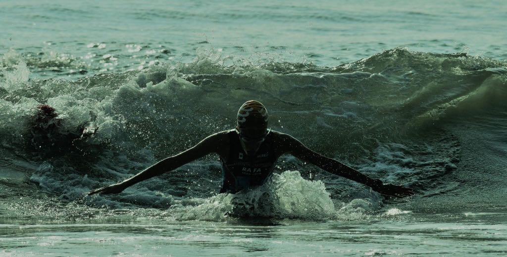
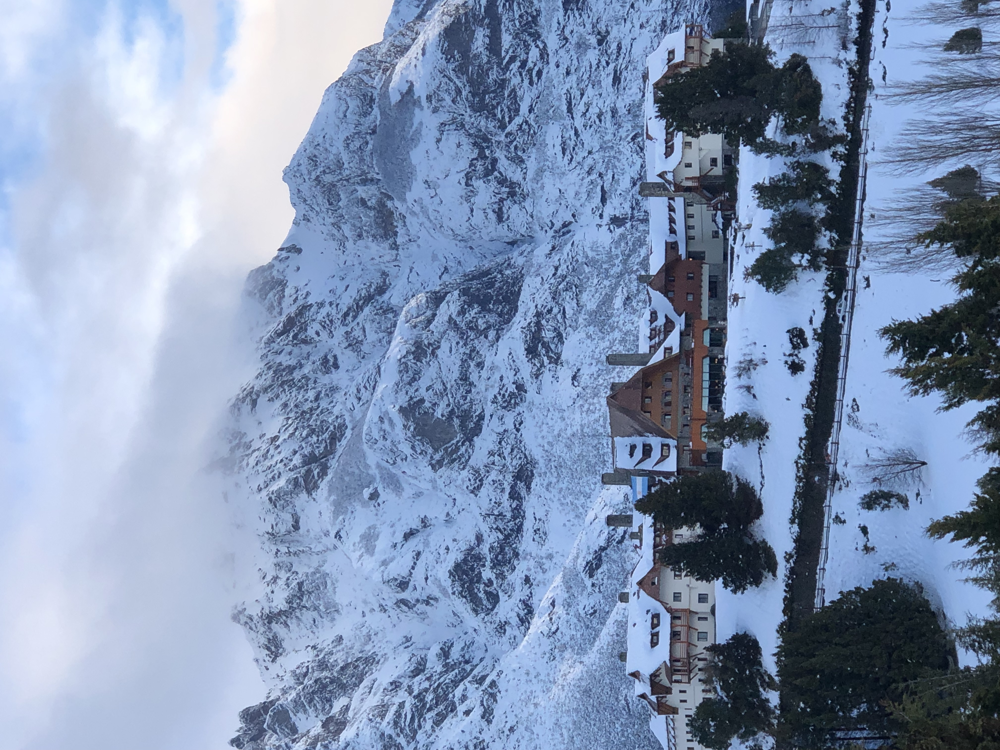
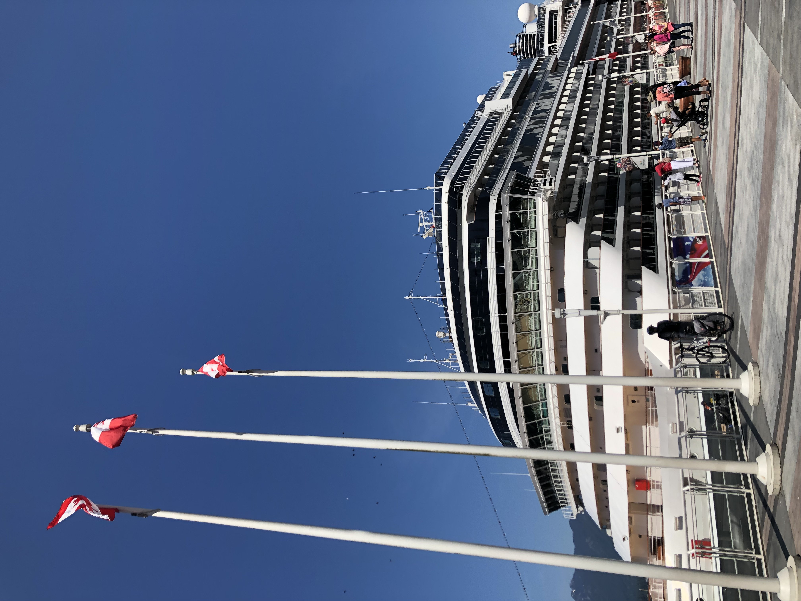
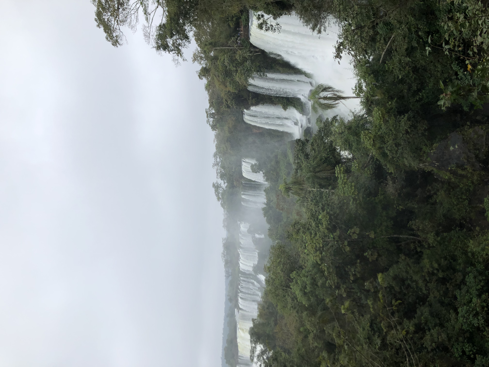
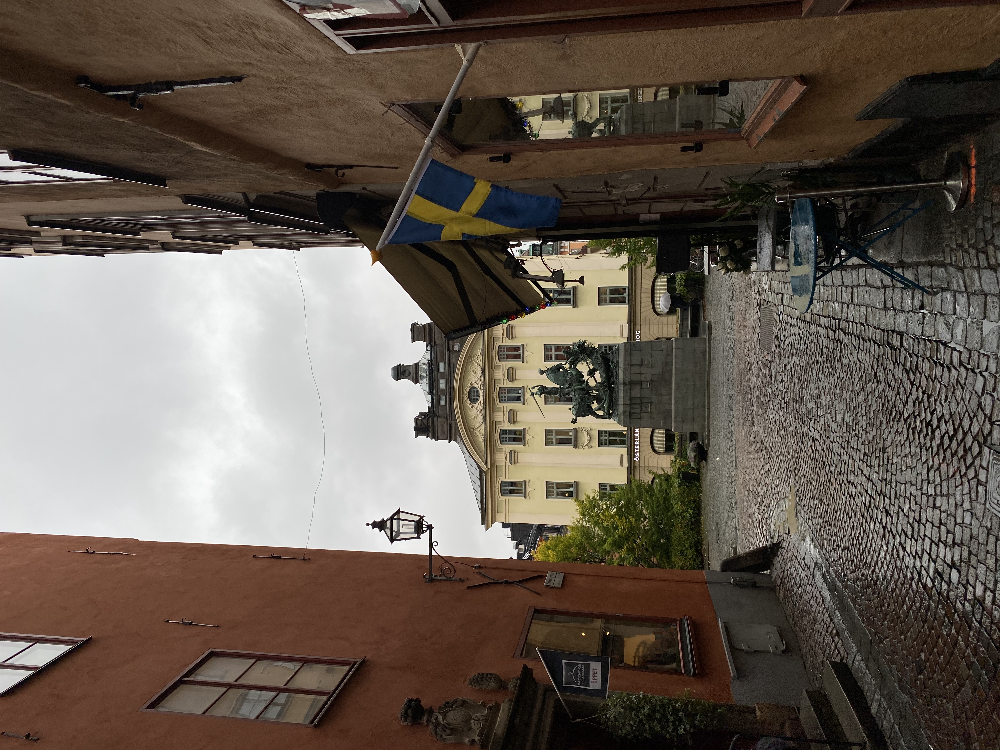
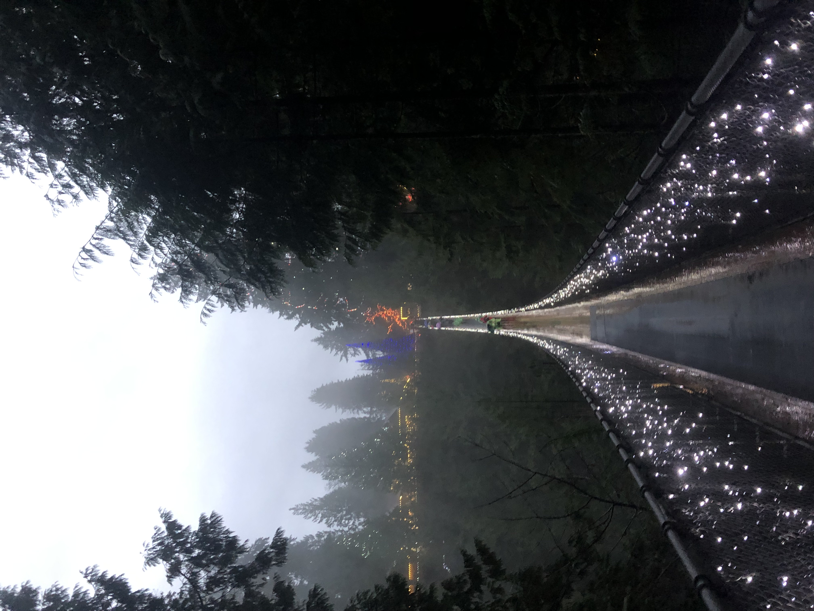
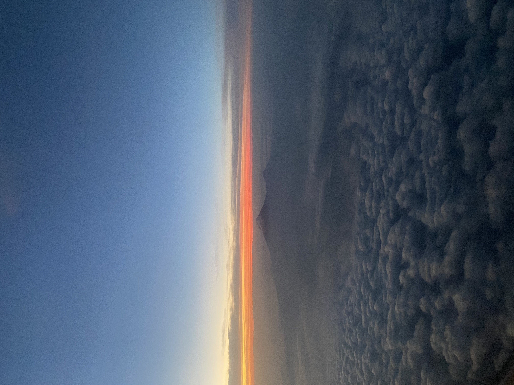

Welcome to Rafa's website :)
I am Rafael Chantres, a Mexican freshman student of the ESSEC GBBA who is starting to get into the world of web development.
Check out this funny website!Sports
I am a sports fanatic. I did triathlon at a high level for four years and currently do running and gym training. Also, due to my triathlon background, I deeply enjoy cycling and swimming. Nonetheless, I really like other sports such as soccer, table tennis and go-kart racing.

Travelling
I have been travelling since I have use memory. So far, I have visited around 30 countries on 3 continents. Hopefully, this list will keep on increasing in the future!
| Check out some pics from my travels! | |||
|---|---|---|---|
| Click on the thumbnails below to make the image larger | |||
 |
 |
 |
 |
 |
 |
 |
|
My favourite wikipedia articles
In my spare time I sometimes like to read random, but interesting, wikipedia articles. By clicking on the following link, you'll be able to check my top picks. The pleasure is all mine ;)
Let's gooooo